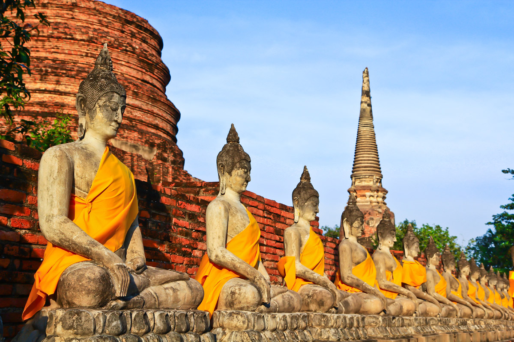
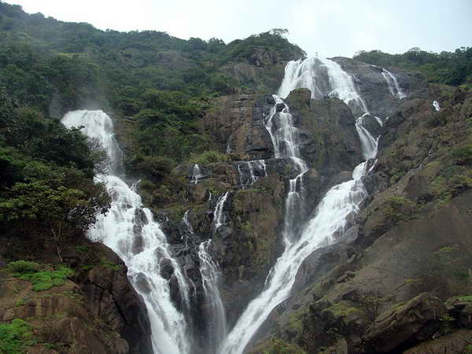

Путешествие во Вьетнам вместе с GreatTravel!
Вьетнам славится прекрасными семейными курортами с высоким уровнем сервиса по доступной цене! Одним из таких является высокогорный курорт Далат, постороенный в свое время французами. Здесь Вы можете за достаточное небольшое количество дней обойти все достопримечательности города и уделить большее внимание природе пригорода, которая не оставит Вас равнодушным. Недаром некоторые называют окрестности Далата "французскими Альпами во Веьтнаме"!
Программа тура
Тур расчитан на 10 дней, в стоимость тура включены основные экскурсии, авиаперелет, трансферы,полноценное трехразовое питание, медицинская страховка.
1 день - Прибытие в Ханой, трансфер, размещение выбранном отеле отдых на побережье.
2 день - Прибытие в Далат, трансфер, размещение выбранном отеле.
3..4 день - Ежедневные экскурсии по городу
5 день - Посещение водопада Датанла
6 день - Экскурсия на водопад Пренн и сад цветов
7 день - Дегустация чайных и кофейных напитков
8 день - Посещение арт-объекта "Сумасшедший дом"
9 день - Посещение "Бутылочного храма" Храма Линь Фуок
10 день - Трансфер в аэропорт и вылет в Ханой 09:00 по местному времени, после чего вылет во Владивосток 12:35 по местному времени.
Стоимость тура - от 20 340 рублей.